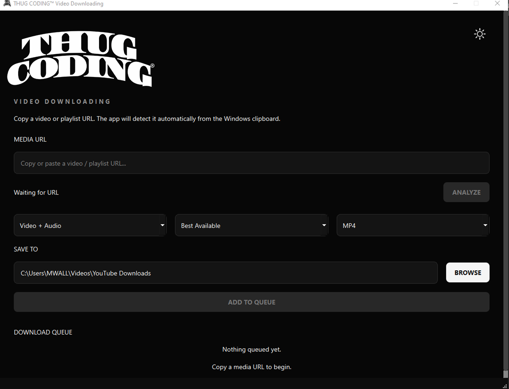

PYTHON
Application logic and the foundation of the desktop software.
WE BUILT THE SOFTWARE.
NOW LEARN HOW WE BUILT IT.
Go behind the build of a real desktop software product and learn how source code becomes an application, an installer, a product, and ultimately something another person can actually use.

THUG CODING® Downloading started with a problem and became a real desktop application.
Building it required more than learning syntax.
We had to design an interface, manage application state, analyze media, process files, handle failures, persist settings, test behavior, package Python, build an installer, create a product website and think about how software reaches a customer.
THIS COURSE IS ABOUT THAT JOURNEY.A commercial application is rarely one technology. THUG CODING® Downloading became a system of technologies working together.
Application logic and the foundation of the desktop software.
Windows, controls, dialogs, events, skins and the application's visual interface.
Source analysis, available-format discovery and media acquisition.
Remuxing, conversion, audio extraction and media processing.
Inspection and verification of resulting media.
Settings, validation and application preferences that survive between launches.
Automated tests used to protect behavior while the application evolves.
Turning the Python project into a standalone Windows application.
Turning the production build into a Windows installer and uninstaller.
Source history, development checkpoints and release management.
The separate web application surrounding the desktop product.
Product email infrastructure with authenticated domain delivery.
The commercial transaction, order and digital delivery layer.
EULA, privacy, acceptable use and third-party notices surrounding the product.
Moving the finished build from the development environment into the hands of a customer.
Technology makes more sense when you understand the problem around it.
You may know some code already.
Or maybe you've been using AI, tutorials and development tools to build pieces of things.
The next question is whether you can connect those pieces into a product.
THIS IS FOR PEOPLE WHO WANT TO BUILD.Not simply how to reproduce one downloader.
We're studying the architecture, tools, decisions and development process behind building an actual desktop product.
LEARN THE SYSTEM, NOT JUST THE SYNTAX.A script working on the developer's machine is one milestone.
Software another person can install, understand and use is another.
THAT GAP IS PRODUCT DEVELOPMENT.Source becomes an application.
The application becomes a production build.
The build becomes an installer.
The installer becomes something that can reach a customer.
PRODUCT IS THE WHOLE SYSTEM WORKING TOGETHER.What happens when something fails?
What should the interface expose?
What should the system decide automatically?
What belongs in v1?
How do you test it?
How do you ship it?
THE PRODUCT CREATES THE CURRICULUM.Study the architecture.
Understand the tools.
Examine the decisions.
Rebuild the concepts.
Connect the components.
Then apply the thinking to something of your own.
BUILD → UNDERSTAND → BUILD AGAIN.Understand the structure of a real Python desktop software project.
See how PySide6 and Qt turn application logic into an interface people can use.
Understand how source analysis, format discovery and processing fit behind the UI.
Learn what the software needs to know while it is running and how different parts communicate.
Understand how applications remember user choices between launches.
Examine the architecture for user-authorized browser and cookie-file access.
Design for the reality that sources, files, tools and environments don't always behave.
See why tests become increasingly important as a software product grows.
Follow the transition from Python source into a standalone Windows application.
Understand how the production application becomes installable software.
Learn about versioning, release artifacts and integrity verification.
Understand why the product website is a separate system surrounding the application.
See how product communication becomes part of the surrounding commercial system.
Understand the difference between the software itself and the system used to sell it.
See how EULA, privacy, acceptable use and third-party notices surround a software release.
Follow the final transition from development artifact to something another person receives.
The desktop application is its own executable.
The product website is another system.
Commerce is another layer.
Email is another layer.
Distribution is another layer.
They can work together without becoming the same thing.
LEARNING TO SEE THOSE BOUNDARIES IS LEARNING SOFTWARE ARCHITECTURE.You don't have to build a media application.
That's not the lesson.
The lesson is learning how to take a problem, break it into systems, connect technologies, test the result and turn the work into something another person can use.
The LAB documents the problem, the product and the thinking behind the build.
LEARN takes the product apart and turns the architecture, tools, decisions and development process into transferable skills.
You have used software your entire life.
Now learn what happens on the other side of the screen.
FROM THE FIRST .PY FILE
v1 SHIPPED.
THE LEARNING STARTS HERE.